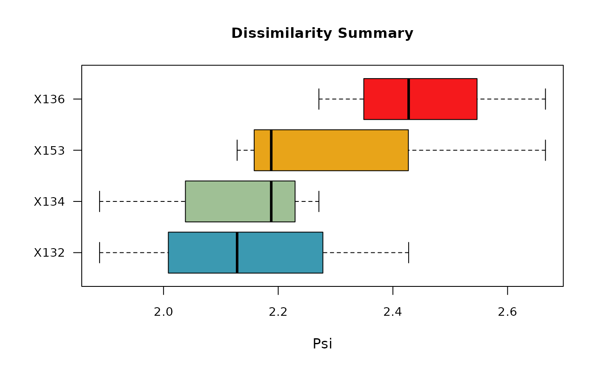

Boxplot of a data frame returned by distantia() summarizing the stats of the psi scores of each time series against all others.
Arguments
- df
(required, data frame) Output of
distantia(),distantia_ls(),distantia_dtw(), ordistantia_time_delay(). Default: NULL- fill_color
(optional, character vector) boxplot fill color. Default: NULL
- f
(optional, function) function used to aggregate the input data frame and arrange the boxes. One of
meanormedian. Default:median.- text_cex
(optional, numeric) Multiplier of the text size. Default: 1
See also
Other distantia_support:
distantia_aggregate(),
distantia_cluster_hclust(),
distantia_cluster_kmeans(),
distantia_matrix(),
distantia_model_frame(),
distantia_spatial(),
distantia_stats(),
distantia_time_delay(),
utils_block_size(),
utils_cluster_hclust_optimizer(),
utils_cluster_kmeans_optimizer(),
utils_cluster_silhouette()
Examples
tsl <- tsl_initialize(
x = distantia::albatross,
name_column = "name",
time_column = "time"
) |>
tsl_transform(
f = f_scale_global
)
df <- distantia(
tsl = tsl,
lock_step = TRUE
)
distantia_boxplot(
df = df,
text_cex = 1.5
)
